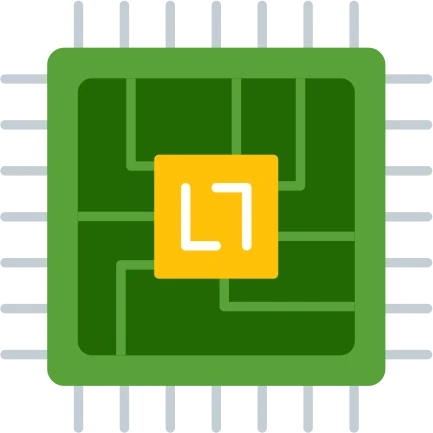
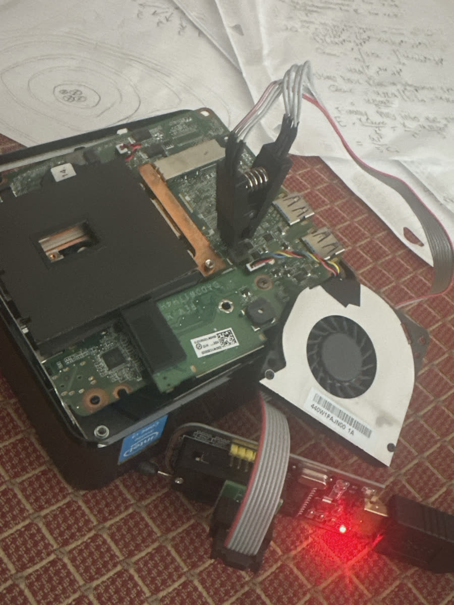
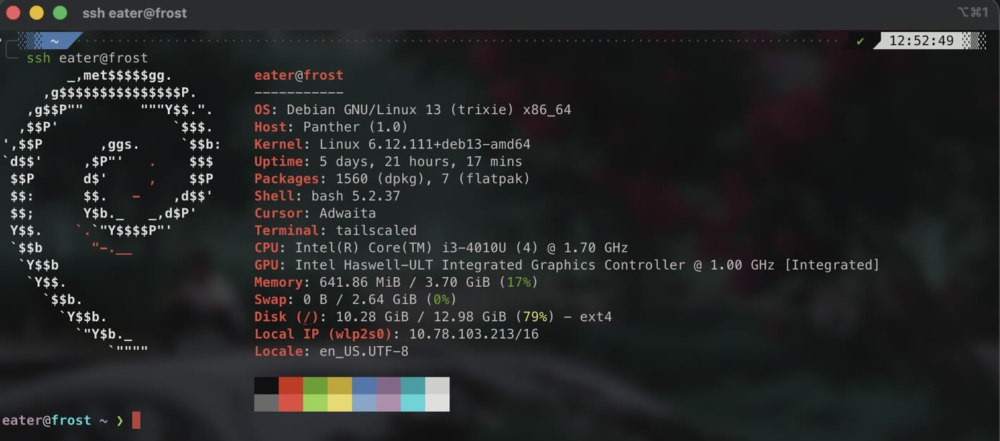

~ / projects / bios-programming

BIOS Programming
An enterprise-locked Chromebox, unlocked by reflashing its firmware chip with a hardware programmer. It's now an always-on Debian server.
Why I did it
My homelab draws a lot of power, so I don't want it running all the time. I'd already added a KVM so I could shut it down remotely, but some daily jobs need a machine that's always on, like the daily scrape that keeps DJWYA's festival lineups fresh.
I had an ASUS Chromebox CN60 I'd bought at a flea market about five years earlier. Back then I gave up on making it a usable computer, because developer mode was locked. Since then I'd solved enough low-level software and hardware problems to try again, and now I had a real job for it.
Why software couldn't fix it
The Chromebox was still enrolled in Chrome Enterprise, and the policy blocked developer mode at the bootloader. Before reaching for hardware, I tried the cheaper fixes first:
- symptomCtrl + D gets an error buzzer The usual way into developer mode, pressing Ctrl + D at the ChromeOS recovery screen, just buzzed. An enterprise policy had it disabled.
- try 1Swap the SSD I pre-loaded an OS onto a different M.2 drive. It didn't boot: the stock firmware checks signatures before it will boot from a drive.
- try 2Reset the CMOS Pulling the RTC battery reset the clock but not the policy. The enrollment flag isn't stored in CMOS.
- causeThe lock lives in the firmware chip ChromeOS uses a hardware root of trust. The enrollment flag sits in the Vital Product Data (VPD) region of the motherboard's SPI flash chip, and the stock firmware enforces Verified Boot. No software change could get past it, so the fix had to be on the chip itself.
Reflashing the chip
With no shell access, I went around the operating system entirely. A CH341A USB programmer with a 1.8 V adapter and an 8-pin SOIC clip let a second computer read and write the firmware chip directly on the board, a technique called in-system programming.
- Remove write protection. I took off the chassis and the fan to expose the 8-pin flash chip, then removed the write-protect screw near the Wi-Fi module. That screw grounds a pin that holds the chip read-only.
- Connect and verify. I attached the clip with pin 1 (the red lead) on the chip's index dot, and read back the chip ID before writing anything to confirm the clip was seated correctly.
- Back up, then flash. I saved a full copy of the factory ChromeOS firmware first, so the change could be undone. Then I erased the chip and wrote MrChromebox's open-source UEFI firmware, built for this board (codename Panther), and read it back to confirm every byte matched.
- Install the OS. After reassembly, the board booted into the TianoCore UEFI payload instead of the ChromeOS recovery screen. I booted a Debian live USB and installed it onto the internal M.2 SSD.

What it runs now
The Chromebox is now a small Debian server on my Tailscale network, and I manage it over SSH. It runs DJWYA's three scraper jobs as systemd timers with a dead-man's-switch alert, so the homelab can power down without taking anything with it.
- hardware
- ASUS Chromebox CN60 · Panther · Intel Haswell
- cpu
- Intel Core i3-4010U · 2 cores / 4 threads
- memory
- 4 GB
- firmware
- MrChromebox UEFI · coreboot + TianoCore
- os
- Debian 13 (trixie)
- access
- SSH over Tailscale

Security & reliability
- Reversible. The factory firmware image is backed up, so the box can go back to stock ChromeOS.
- Verified writes. I checked the chip ID before writing and read the image back afterwards. A bad flash would have left the board unable to boot.
- Remote access over Tailscale. I reach the box with Tailscale SSH, so nothing on it needs to be exposed to the internet.
- Physical access beats policy. The enterprise lock stopped every software approach, but it couldn't survive a cheap clip and a removed screw. Firmware controls only hold while the hardware write-protect does.
- Deprovision before disposal. This box left its organization still enrolled. Releasing devices from management and wiping them before they're sold is part of the asset lifecycle, and it's easy to miss.
- Next. The root disk is 79% full (10 of 13 GB). I want log rotation and a disk alert before the scrapers fill it.
What carries over
Five years ago this box beat me. This time I worked out where the lock actually lived before trying to break it. The two failed attempts weren't wasted, because each one ruled out a layer: the drive, then the CMOS, which left the firmware chip.
The habits are what carry over to any hardware job: find pin 1 before connecting anything, know what's physically holding a part read-only, and back up before you write.
Stack
- hardware
- firmware
- os